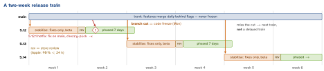

engineering · folio
In one line: A mobile release cannot be undone: every build is reviewed, signed, rolled out gradually, and then lives on phones for months. So releases leave on a fixed train (date fixed, scope floats), each build gets a strictly increasing build number, the backend stays compatible with every version still installed, a minimum-version switch exists before it is needed, and “rollback” means roll forward: a flag flip or a hotfix build.
Download PDF Print view LaTeX source


Version vs build number
| iOS | Android | |
|---|---|---|
| shown | CFBundleShortVersionString: three integers, 5.12.1 | versionName: any string; the only value users see |
| build | CFBundleVersion: 1–3 integers; unique per upload of a version | versionCode: positive int, never reused, max 2 100 000 000 |
| order | build must rise for each upload of the same version | install refuses a lower versionCode: no downgrades |
Set the build number from CI (run number or timestamp), never by hand; tag every build (v5.12.1+4211) so a crash’s build maps to a commit.
How a train runs
- Fixed cadence (1–2 weeks): the date is fixed, the scope floats; unfinished work ships dark behind a flag. Small batches = small risk, predictable dates for product and QA.
- Branch cut / code freeze:
release/5.12from main; only approved fixes land, each fixed on main first and cherry-picked. Regression suite, beta (TestFlight / Play testing track), release notes. - Go / no-go by a rotating release captain: crash-free and hang rates of the beta, open blockers, backend ready, store assets done. Then submit, release manually after approval.
- Rollout: App Store phased release (automatic updates only, 7 days) · Play staged rollout (you pick the %, can halt). Gate each step on crash-free users vs the previous version.
Old versions never die — backward compatibility
- Every version since the minimum supported one is a client of your API: users with auto-update off, devices stuck on an old OS. Send app version + build in a header and measure them.
- API changes are additive (expand → migrate → contract): add a field, never rename or change its meaning; clients ignore unknown fields and map unknown enum cases to
.unknown. Breaking change = new endpoint / API version, old one kept until its traffic is negligible. - Min supported version: remote config returns
minVersion(below → forced update, blocking screen → store) andrecommendedVersion(below → soft prompt). Android also has Play In-App Updates (immediate / flexible); iOS has no system API — compare yourself.
Remember
“Trains leave on time, builds only go up, old apps never die — ship the min-version switch in v1.”
Example — forced vs soft update
struct UpdatePolicy: Decodable { // from remote config
let minVersion: String; let recommendedVersion: String }
enum UpdateState { case ok, soft, forced }
func parts(_ s: String) -> [Int] { // "5.9" -> [5, 9, 0]
Array((s.split(separator: ".").map { Int($0) ?? 0 }
+ [0, 0, 0]).prefix(3)) }
func state(current: String, _ p: UpdatePolicy) -> UpdateState {
let c = parts(current) // numeric, not "5.9" > "5.12"
if c.lexicographicallyPrecedes(parts(p.minVersion)) { return .forced }
if c.lexicographicallyPrecedes(parts(p.recommendedVersion)) { return .soft }
return .ok }
// current: Bundle.main.infoDictionary?["CFBundleShortVersionString"]There is no rollback
Neither store lets you push an older build: Android refuses a lower versionCode, the App Store serves only the latest approved version. Halting a phased/staged rollout only protects users not yet updated. The levers, fastest first: server-side kill switch / flag → backend fix → hotfix build (or the old code rebuilt with a higher build number). RN: an OTA JS update if runtime-compatible.
Hotfix process
Triage severity (crash rate, data loss, security, revenue) → mitigate server-side → fix on main with a test → cherry-pick to release/5.12 → 5.12.1, new build → Apple expedited review for a critical bug fix → faster rollout → postmortem.
Keys and notes
- Signing custody: iOS distribution identity in an encrypted store (match) + CI secrets, few humans. Android Play App Signing: Google holds the app signing key, you hold the upload key (a lost one can be reset); new apps are enrolled automatically.
- Release notes: user-facing “What’s New” per locale, written for users; the internal changelog comes from PR labels / conventional commits.
Traps
- Adding the forced-update check after you need it — the old binary doesn’t have it.
- Comparing versions as strings:
"5.9" > "5.12". - Renaming a JSON field used by a version still on 8 % of devices.
- “Phased release lets us roll back” — it pauses, it does not undo.